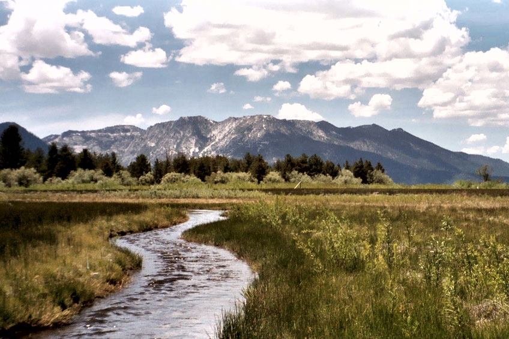
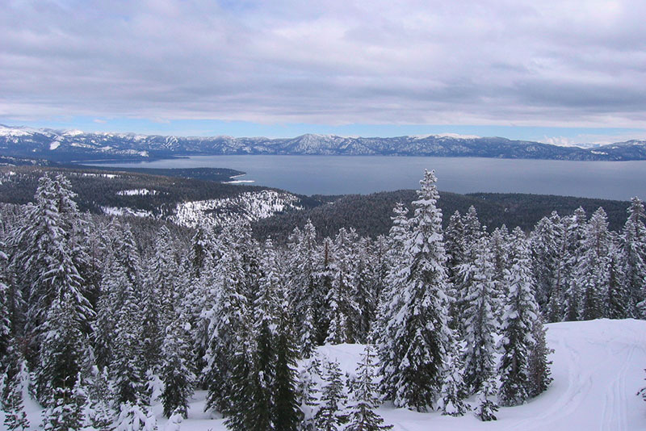
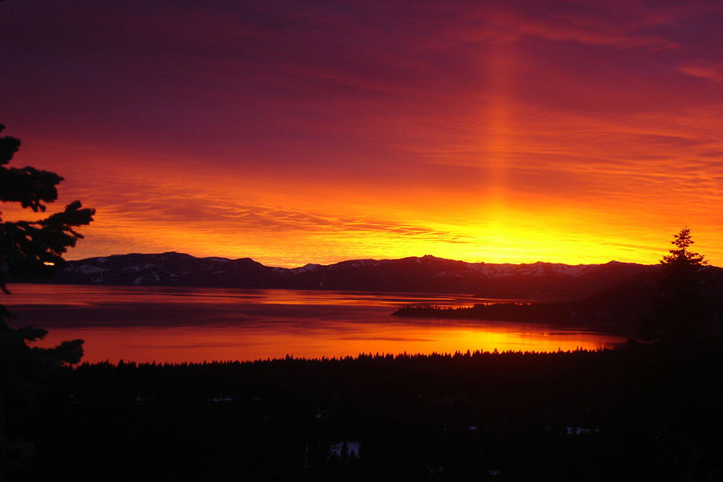

Take a hike!
Hundreds of miles of scenic hiking trails.
Lake Tahoe hiking trails range from easy strolls to steep switchbacks leading into the upper atmosphere. Whether you’re looking for the secluded Sierra Forest and Meadows outide Tahoe City or the waterfalls, volcanic rock and wildflowers of the Pacific Crest Trail, you’ll find the best hikes of your life in Lake Tahoe.
Hiking and exploring trails on foot is one of the best ways to access the untouched beauty of Lake Tahoe, but if you prefer biking, The Flume Trail of the east shore is one of Mountain Biking Magazine's Top 10 Trails in the U.S. There are also many paved off-road bicycle paths that meander through communities on all sides of the lake.
Download the 2015 Trail Guide
Read more

Fun Year Round
There's tons to do no matter the season!
In the summer, the days are hot and sunny and the nights are cool with that perfect temperature for sleeping in a tent. You can kayak to Fannette Island, hike up to the tea house and jump off the rocks into Emerald Bay. Hit a few golf balls into the water at Edgewood and then go snorkeling to find them again. You can also get an all-over tan on the nude beach at Secret Cove.
In the winter, we invite you to go sledding at Tahoe Meadows, cross country ski the Royal Gorge near Soda Springs, or moonlight snowshoe Chickadee Ridge. near Tahoe Meadows and get a great view of the North Shore at night. Watch—or even compete—in the polar bear swim from the dock at Gar Woods during SnowFest! Ski or board Granite Chief and the Funnel at Squaw Valley and relax in the evening at the outdoor fire pit.
Book a ski trip now!
Read more

Breathtaking Views
One of the unsung natural wonders of the world.
Lake Tahoe is where California and Nevada meet. Hike to the top of Mount Rose and a get a view of Reno/Sparks, Carson City, Washoe Valley, and all of Lake Tahoe. Or experience the exhilaration of parasailing for unparalleled and spectacular views of the lake.
You can also take a helicopter tour. Reno Tahoe Helicopters is based out of the Lake Tahoe Airport in South Lake Tahoe, CA and has been giving people the experience of a lifetime for more than 10 years. They offer scenic tours year-round of the “Lake of the Sky” from the best vantage point available. Experience the spectacular scenery of Emerald Bay’s magnificent teal waters, the pristine rocky shorelines of Zephyr Cove and Sand Harbor.
Watch the video
Read more